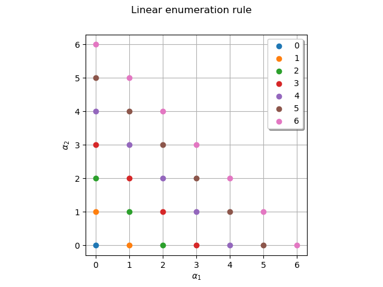
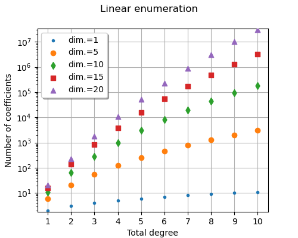
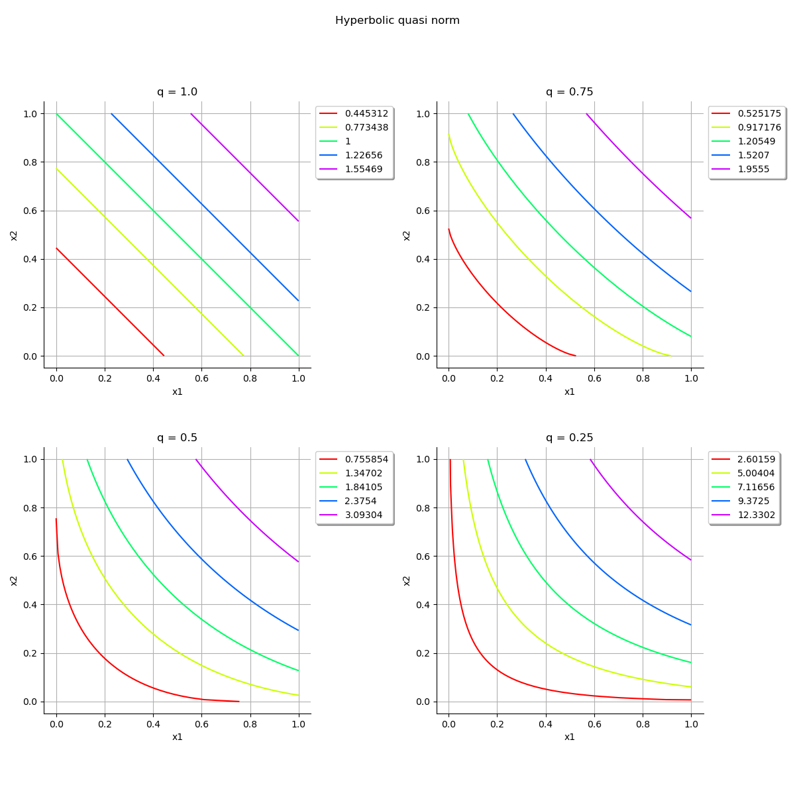
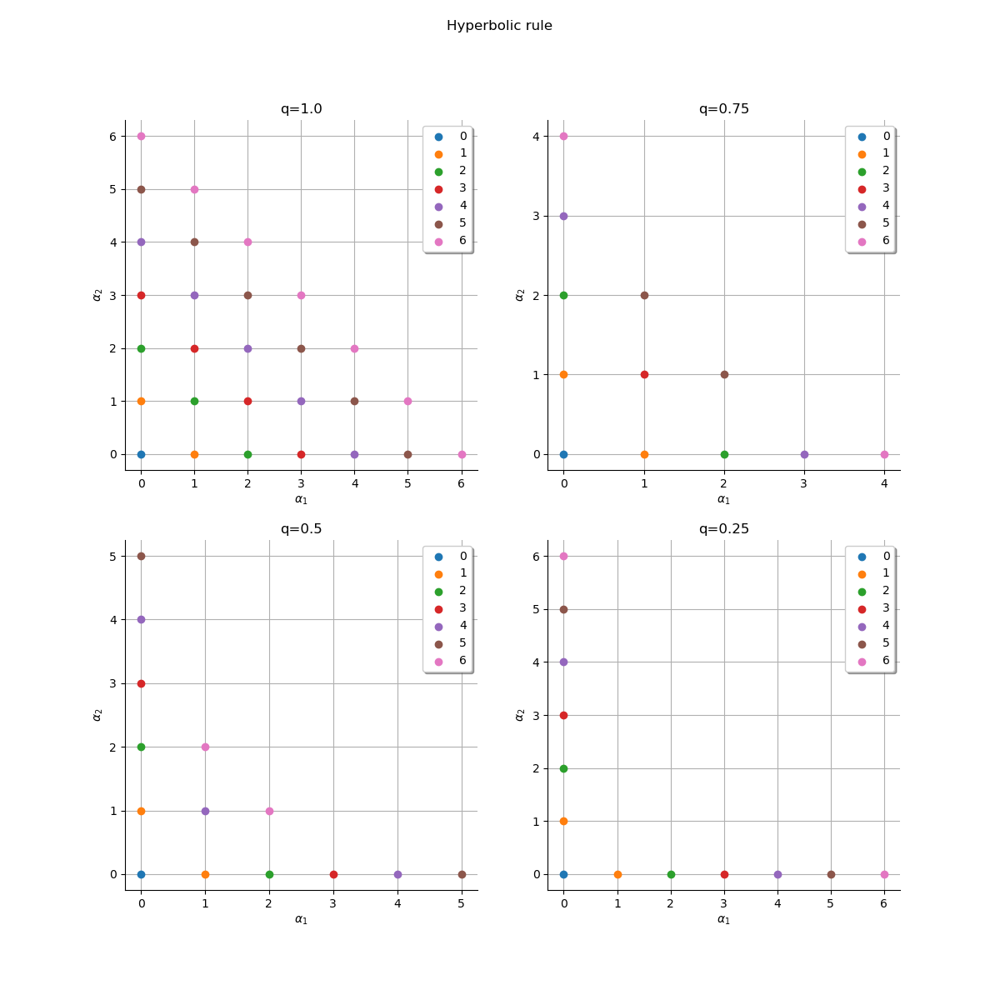
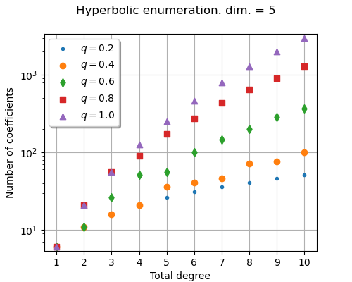

Note
Click here to download the full example code
Plot enumeration rules¶
In order to build up a functional chaos multivariate basis  by tensorization of univariate basis terms, we need to enumerate the multi-indices
by tensorization of univariate basis terms, we need to enumerate the multi-indices  .
In this example we are going to explore properties of these enumeration rules.
Refer also to Chaos basis enumeration strategies in the theoric documentation.
.
In this example we are going to explore properties of these enumeration rules.
Refer also to Chaos basis enumeration strategies in the theoric documentation.
import openturns as ot
import openturns.viewer as otv
import math as m
The simplest way to generate the multi-indices is to enumerate the terms of increasing length. In other words, we enumerate the multi-indices with length equal to 0, then 1, 2, 3, etc. This is called “graded reverse-lexicographic ordering” in [sullivan2015]. This is named the linear enumeration rule in the library; let us instanciate it in the 2-dimensional case.
dim = 2
enum_func = ot.LinearEnumerateFunction(dim)
Print the 25 first multi-indices and their associated length.
td_prev = 0
print("# | multi-index | length")
print("---+-------------+-------------")
for i in range(25):
multi_index = enum_func(i)
td = sum(multi_index)
if td > td_prev:
td_prev = td
print("---+-------------+-------------")
print(f"{i:2} | {multi_index} | {td}")
# | multi-index | length
---+-------------+-------------
0 | [0,0] | 0
---+-------------+-------------
1 | [1,0] | 1
2 | [0,1] | 1
---+-------------+-------------
3 | [2,0] | 2
4 | [1,1] | 2
5 | [0,2] | 2
---+-------------+-------------
6 | [3,0] | 3
7 | [2,1] | 3
8 | [1,2] | 3
9 | [0,3] | 3
---+-------------+-------------
10 | [4,0] | 4
11 | [3,1] | 4
12 | [2,2] | 4
13 | [1,3] | 4
14 | [0,4] | 4
---+-------------+-------------
15 | [5,0] | 5
16 | [4,1] | 5
17 | [3,2] | 5
18 | [2,3] | 5
19 | [1,4] | 5
20 | [0,5] | 5
---+-------------+-------------
21 | [6,0] | 6
22 | [5,1] | 6
23 | [4,2] | 6
24 | [3,3] | 6
Plot the multi-indices of the enumeration rule by stratas. In the specific case of the linear enumerate function, each strata contains multi-indices of identical length that is also the index of the strata.
def draw_stratas(enum_func):
"""
Plot enumeration rule by stratas.
Parameters
----------
enum_func : openturns.EnumerateFunction
Enumerate function
Returns
-------
graph : openturns.Graph
Plot of the multi-indices colored by stratas
"""
maximum_strata_index = 7
graph = ot.Graph("", "$\\alpha_1$", "$\\alpha_2$", True)
if enum_func.__class__.__name__ == "LinearEnumerateFunction":
graph.setTitle("Linear enumeration rule")
elif enum_func.__class__.__name__ == "HyperbolicAnisotropicEnumerateFunction":
graph.setTitle(f"q={enum_func.getQ()}")
offset = 0
for strata_index in range(maximum_strata_index):
strata_cardinal = enum_func.getStrataCardinal(strata_index)
sample_in_layer = [enum_func(idx + offset) for idx in range(strata_cardinal)]
offset += strata_cardinal
cloud = ot.Cloud(sample_in_layer)
cloud.setLegend(str(strata_index))
cloud.setPointStyle("circle")
graph.add(cloud)
palette = ot.DrawableImplementation.BuildDefaultPalette(maximum_strata_index)
graph.setColors(palette)
graph.setIntegerXTick(True)
graph.setIntegerYTick(True)
graph.setLegendPosition("topright")
return graph
graph = draw_stratas(enum_func)
view = otv.View(graph, axes_kw={"aspect": "equal"})

When the number of input dimensions of a polynomial chaos expansion (PCE) increases,
each multi-index correspond to a coefficient in the expansion.
Hence, the number of multi-indices represents the number of coefficients in the PCE.
Plot the number of terms in the basis depending on the maximum total degree
for several dimension values.
We observe the exponential increase of the number of terms with the dimension
 (curse of dimensionality).
(curse of dimensionality).
graph = ot.Graph(
"Full tensorized basis", "Total degree", "Number of coefficients", True
)
degree_maximum = 10
list_of_polynomial_degrees = [1, 5, 10, 15, 20]
point_styles = ["bullet", "circle", "fdiamond", "fsquare", "triangleup"]
palette = ot.DrawableImplementation.BuildDefaultPalette(len(list_of_polynomial_degrees))
for i in range(len(list_of_polynomial_degrees)):
d = list_of_polynomial_degrees[i]
number_of_coeff_array = ot.Sample(degree_maximum, 2)
for p in range(1, 1 + degree_maximum):
number_of_coeff_array[p - 1, 0] = p
number_of_coeff_array[p - 1, 1] = m.comb(p + d, p)
cloud = ot.Cloud(number_of_coeff_array)
cloud.setPointStyle(point_styles[i])
cloud.setLegend(f"$d={d}$")
cloud.setColor(palette[i])
graph.add(cloud)
graph.setLegendPosition("topleft")
graph.setIntegerXTick(True)
graph.setLogScale(ot.GraphImplementation.LOGY)
view = otv.View(graph, figure_kw={"figsize": (5, 4)})

Plot the hyperbolic quasi norm for different values of q. With q=1 stratas are hyperplanes, and in case of isotropy it is equivalent to the linear enumeration rule.
def draw_qnorm(q):
def qnorm(x):
norm = 0.0
for xi in x:
norm += xi**q
norm = norm ** (1.0 / q)
return [norm]
f = ot.PythonFunction(2, 1, qnorm)
f.setInputDescription(["x1", "x2"])
graph = f.draw([0.0] * 2, [1.0] * 2)
graph.setTitle(f"q = {q}")
return graph
dln = ot.ResourceMap.GetAsUnsignedInteger("Contour-DefaultLevelsNumber")
ot.ResourceMap.SetAsUnsignedInteger("Contour-DefaultLevelsNumber", 5)
grid = ot.GridLayout(2, 2)
grid.setGraph(0, 0, draw_qnorm(1.0))
grid.setGraph(0, 1, draw_qnorm(0.75))
grid.setGraph(1, 0, draw_qnorm(0.5))
grid.setGraph(1, 1, draw_qnorm(0.25))
ot.ResourceMap.SetAsUnsignedInteger("Contour-DefaultLevelsNumber", dln)
grid.setTitle("Hyperbolic quasi norm")
view = otv.View(grid, axes_kw={"aspect": "equal"})

Plot the multi-indices of the linear enumeration rule by stratas. The lower the value of q the lower the number of interactions terms in stratas.
grid = ot.GridLayout(2, 2)
grid.setGraph(0, 0, draw_stratas(ot.HyperbolicAnisotropicEnumerateFunction(dim, 1.0)))
grid.setGraph(0, 1, draw_stratas(ot.HyperbolicAnisotropicEnumerateFunction(dim, 0.75)))
grid.setGraph(1, 0, draw_stratas(ot.HyperbolicAnisotropicEnumerateFunction(dim, 0.5)))
grid.setGraph(1, 1, draw_stratas(ot.HyperbolicAnisotropicEnumerateFunction(dim, 0.25)))
grid.setTitle("Hyperbolic rule")
view = otv.View(grid, axes_kw={"aspect": "equal"})

Interaction multi-indices are presented in the center of the  space.
We see that when the quasi-norm parameter is close to zero, the enumeration rule
shows less interaction multi-indices.
Instead, multi-indices close to the X and Y axes represent multivariate polynomials
with high marginal degrees.
When q is close to zero, these polynomials with high marginal degrees appear
sooner with the hyperbolic enumeration rule.
space.
We see that when the quasi-norm parameter is close to zero, the enumeration rule
shows less interaction multi-indices.
Instead, multi-indices close to the X and Y axes represent multivariate polynomials
with high marginal degrees.
When q is close to zero, these polynomials with high marginal degrees appear
sooner with the hyperbolic enumeration rule.
Plot the number of terms in the basis depending on the maximum total degree in dimension d=5 for several q-norm values. We observe that the gap between high and low values of q can lead to a gap in the numbers of terms of an order of magnitude.
dim = 5
graph = ot.Graph(
"Full tensorized basis. d = %d" % (dim),
"Total degree",
"Number of coefficients",
True,
)
degree_maximum = 10
q_list = [0.2, 0.4, 0.6, 0.8, 1.0]
point_styles = ["bullet", "circle", "fdiamond", "fsquare", "triangleup"]
palette = ot.DrawableImplementation.BuildDefaultPalette(len(list_of_polynomial_degrees))
for i in range(len(q_list)):
q = q_list[i]
enum_func = ot.HyperbolicAnisotropicEnumerateFunction(dim, q)
number_of_coeff_array = ot.Sample(degree_maximum, 2)
for p in range(1, 1 + degree_maximum):
number_of_coeff_array[p - 1, 0] = p
number_of_coeff_array[p - 1, 1] = enum_func.getMaximumDegreeCardinal(p)
cloud = ot.Cloud(number_of_coeff_array)
cloud.setPointStyle(point_styles[i])
cloud.setLegend(f"$q={q}$")
cloud.setColor(palette[i])
graph.add(cloud)
graph.setLegendPosition("topleft")
graph.setIntegerXTick(True)
graph.setLogScale(ot.GraphImplementation.LOGY)
view = otv.View(graph, figure_kw={"figsize": (5, 4)})
otv.View.ShowAll()

When the quasi-norm parameter is close to 1, then the hyperbolic rule is equal to the linear enumeration rule and the number of coefficients is larger.
In practice, we often test several values of the parameter q, in the [0.5, 0.9] range,
for example  .
.
Total running time of the script: ( 0 minutes 1.097 seconds)